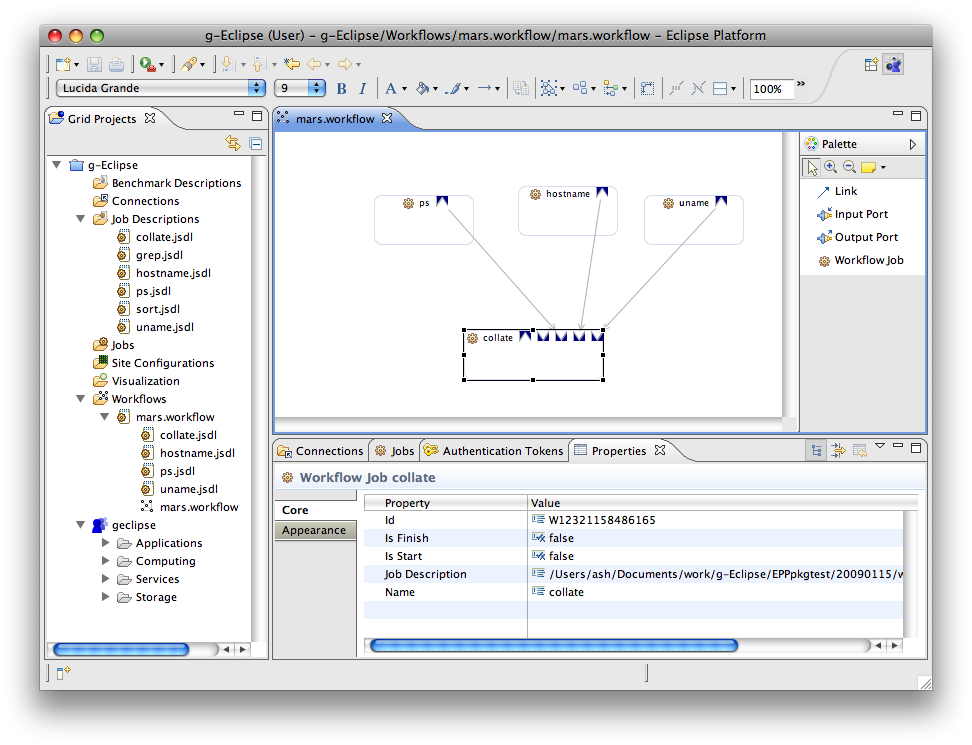

Creating a Grid Workflow
g-Eclipse comes with a graphical workflow builder that enables the creation of complex
workflows. These workflows can then be submitted for execution to different workflow engines
supported by the various supported grid middleware.
To get started with creating a workflow, go to
 File > New > Workflow Diagram.
(Alternatively, you could right-click on the Workflows folder in a Grid Project and choose New > Workflow Diagram.)
This will open up the New Workflow Wizard page where you will be prompted to enter a name for your workflow. The name should have an
extension of .workflow. On clicking Finish, the the newly created workflow is opened in the graphical workflow editor.
File > New > Workflow Diagram.
(Alternatively, you could right-click on the Workflows folder in a Grid Project and choose New > Workflow Diagram.)
This will open up the New Workflow Wizard page where you will be prompted to enter a name for your workflow. The name should have an
extension of .workflow. On clicking Finish, the the newly created workflow is opened in the graphical workflow editor.
A Workflow in g-Eclipse is stored in a dedicated folder that holds a .workflow file and
associated JSDL files that correspond to the individual jobs in the workflow. In the Workflows folder of the Grid Project,
you can see the folder corresponding to your newly created workflow and, upon expanding it, you can
see the .workflow file inside it. Any JSDL files you associate with Workflow Jobs will appear in this
folder too.
You can add jobs to your workflow in more than one way. The easiest method is to drag and drop an existing JSDL file from the Grid Projects View
directly into the editor area. This will create a Workflow Job in the editor, and populate it with Input and Output Ports corresponding to the input
and output data stagers defined in the JSDL file. The Workflow Job is named after the JSDL file and a copy of this file appears
in the .workflow folder in the Grid Projects View. (Note that this JSDL file is a copy and can be edited and used independently of the original.)
Multiple JSDL files can be selected, dragged and dropped at once.

Another approach is to use the palette on the right side of the editor. From the palette, select Workflow Job and
click anywhere in the empty editor area. A rectangular box (representing a job) appears in the editor
and you can give the job a name by typing in the text area. Next, you can add an Output Port to the workflow job by selecting
Output Port from the Palette and then clicking on your workflow job. A little blue box with an outward pointing arrowhead
- - appears, showing that your job now has an Output Port. Following a similar procedure,
you can add another job to the workflow and add an Input Port to it, which appears as a little blue box with an inward pointing arrowhead
- . Then, select Link from the palette, click on the Output Port of the first job, drag
the pointer until you reach the Input Port of the second job and release. The two (so far independent) jobs are now linked to form a simple workflow.
Associating your Workflow Jobs with JSDL files can also be accomplished in more than one way. The easiest is to drag and drop an existing JSDL file
from the Grid Projects View directly onto the Workflow Job. This sets up the association and creates a copy of the JSDL file in the .workflow folder. If the JSDL
file you want to use is not in your workspace, you can right-click on the workflow job in the editor and select Add Job Description. You will then
be presented with a File dialog that will enable you to browse and choose the JSDL file. If you would like to create a new JSDL file to associate with
a Workflow Job, then simply double-click on it and this will fire up the New Job Description Wizard that will lead you through the process. If you feel the need
to edit the JSDL file associated with any workflow job, you can right-click on the workflow job and select Open Job in JSDL Editor.